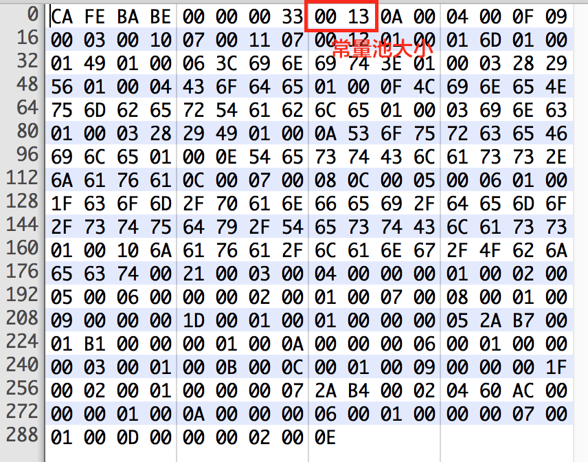

平台无关性
实现平台无关性的关键就在于运行在各种不同平台上的虚拟机都可以载入和执行同一套与平台无关的字节码，从而实现程序的“一次书写，到处执行”。
使用Java编译器可以把Java代码编译成存储字节码的Class文件，使用JRuby等其他语言的编译器同样可以把程序代码编译成Class文件，虚拟机不关心Class的来源语言是什么，只要它符合Class文件应有的结构，它就可以在Java虚拟机中运行。
Class类文件的结构
Class文件是一组以8位字节为基础单位的二进制流，各个数据项目严格按照顺序紧凑的的排列在Class文件中，中间没有任何分隔符。
根据Java虚拟机规范，Class文件格式采用一种伪结构体来存储，这个伪结构体里只有两种数据类型：无符号数和表。后面的解析都基于这两种数据类型，这里先介绍这两个概念：
- 无符号数。无符号数是基本数据类型，以u1,u2,u4,u8分别来代表1个字节，2个字节，4个字节，8个字节的无符号数，无符号数可以用来描述数字，索引引用，数量值或是按照UTF-8编码构成的字符串值。
- 表。表是由多个无符号数和其他表作为数据项构成的复合数据类型，所有表都习惯以_info结尾。表用于描述有层次关系的复合数据结构的数据。整个Class文件本质就是一张表。
如上所示，Class文件中所有的数据项，无论是顺序还是数量，都是被严格限定的，哪个字节代表什么意思，长度是多少，先后顺序如何，都是不允许改变的。接下来我们将一起看看各个数据项的具体含义。
为了方便接下来的介绍，我们先写一小段极简单的Java代码。
|
|
这是对这段代码使用jdk1.7编译器编译得到的Class文件：

后面对Class文件中各个数据项的介绍都以这段代码生成的Class文件为例来进行说明。
魔数与Class文件版本
每个Class文件的头4个字节称为魔数(magic)，它的唯一作用是用于确定这个文件是否为一个Java虚拟机能接受的Class文件。很多文件存储标准里都用魔数来来进行身份识别，譬如图片文件，gif和jpeg等在文件头中都有魔数。Class文件的魔数值为:0xCAFEBABE，占用四个字节。如上图所示。

紧跟着魔数后的4个字节表示Class文件的版本号，全文件第五、第六个字节是次版本号(Minor Version)，第七、第八个字节是主版本号(Major Version)。主次版本号是为了让虚拟机来确定当前版本的虚拟机是否能够接受并运行这个Class文件。图中，我们这四个字节为0x00000033。次版本号为0x0000，主版本号为0x0033，十进制为51，这个版本号说明这个Class文件可以被JDK 1.7或更高版本的虚拟机所接受执行。
常量池
紧接着主次版本号后的就是常量池部分，常量池是整个Class文件结构中与其他项目关联最多的数据类型，也是占用Class文件空间最大的的数据项之一。同时它也是Class文件中出现的第一个表类型的数据项。
由于常量池中常量的数量是不确定的，所以常量池的入口放置了一项u2类型的数据，代表常量池容量计数值。与Java语言习惯不同的是，常量池的容量计数是从1而不是从0开始的，在下图中，常量池的长度为0x0016，即十进制的22，这就代表常量池有21项常量，索引值从1-21。Class文件中只有常量池的容量计数是从1开始的，其他的集合类型，包括接口索引集合，字段表集合，方法表集合等容量计数都是从0开始的。

常量池中主要存放两大类常量：字面量和符号引用。无论是字面量还是符号引用，其本质都是一个表结构，常量池包含的主要的表结构数据如下：
这些表类型都有一个共同的特点：就是表开始的第一个是一个u1类型的标志位（tag），代表当前这个常量属于哪种类型的常量。
据此，我们由下面的例图来具体分析一下常量池中的各项。
首先来看一下第一项，它的标志位是0x0A，十进制表示10，根据上表可以看到这个常量属于CONSTANT_Methodref_info类型，此类型表示类中方法的符号引用。CONSTANT_Methodref_info类型包含三个部分，第1个字节表示标志位，中间2个字节表示指向声明方法的类描述符CONSTANT_Class_info的索引项，最后两个字节表示指向名称及类型的描述符CONSTANT_NameAndType的索引项。除了刚刚介绍的第一项的标志位是0x0A，还有第二项是0x0004,表示它指向常量池中的第4个常量，第三项是0x000F,表示它指向常量池中的第15项。
那我们具体看看第4项是什么。
可以看到第4项的标记位是0x07,根据查表可以知道这个常量属于CONSTANT_Class_info类型，再根据常量池各个类型结构的表可以得知，CONSTANT_Class_info类型常量仅包含两部分，第1个字节表示标记位，后两个字节表示指向全限定名常量项的索引。这里后两项是0x0012,十进制18，所以它表示指向第18项常量。这里我们看下第18项常量：
可以看到第18项的标记位是0x01,查表可知这个常量属于CONSTANT_Utf8_info类型，它包括三部分，第1个字节表示标志位，接着2个字节表示UTF-8编码的字符串占用的字节数，后面有前两个字节表示的长度个字符。对于上图中，标志位后面接着的两位是0x10，十进制16，说明后面接着是16个字节的UTF-8编码的字符串。例如后面跟的第一个字节是0x6A,十进制106，UTF-8编码代表“j”,以此类推，这16个字节代表着：“java/lang/Object”。
至此第4项常量我们就分析完了，同样的方法可以分析出第15项常量表示什么。像这样分析Class文件太慢了，我们可以利用 javap -verbose class文件名 来帮助我们分析Class文件。像这份Class文件，我们可以得到常量池的结果为：
|
|
这样看起来就很直观了，也大大的提高了我们分析的效率。我们可以用这个来分析一下第15项常量，它是一个NameAndType的类型的常量。它又指向第7和第8项常量，第7项常量是一个UTF-8的字符串“
访问标志
在常量池之后紧接着两个字节表示访问标志(access_flags)，这个标志用于识别一些类或接口层面的访问信息。这里在网上找到一张画的非常好的图片（来源：http://blog.csdn.net/luanlouis/article/details/41039269），来表达这个意思：
以咱们的这个Class文件为例：
访问标志为0x0021，二进制为0000 0000 0010 0001，对比上图，ACC_PUBLIC和ACC_SUPER标记位为真。
类索引、父类索引与接口索引列表
访问标志后面紧跟着的就是2个字节的类索引，2个字节的父类索引，以及若干个2字节的接口索引集合。Class文件中由这三项数据来确定这个类的继承关系。类索引用于确定这个类的全限定名，父类索引用于确定父类的全限定名，Java不允许多继承，所以只会有一个父类索引。除了java.lang.Object以外，所有的Java类都有父类，因此除了java.lang.Object，父类索引都不为0。接口索引列表就是确定这个类实现的所有接口，按照implments后面排列的顺序，从左到右排列在接口的索引集合中。
这个Class文件中，类索引是0x0003，指向常量池中第3项常量。父类索引是0x0004，指向常量池中第4项常量。后面两位表示接下来接口列表的数量，0x0000，这个类没有实现任何接口，接口数量为0，所以这部分也就到此为止。
字段表集合
字段表用于描述接口或类中声明的变量，字段包括了类级变量和实例级变量，但不包含在方法内部声明的变量。紧跟在类索引、父类索引、接口索引列表后面的就是字段表集合。首先有两个字节表示字段表中字段的数量(fileds_count)，后面紧接着是长度为这个数值的字段表列表：
例图中表示字段表中只有一项，所以接下来只有一个字段。字段表中表示一个字段的结构如下：
| 类型 | 名称 | 数量 |
|---|---|---|
| u2 | access_flags | 1 |
| u2 | name_index | 1 |
| u2 | descriptor_index | 1 |
| u2 | attributes_count | 1 |
| attribute_info | attributes | attributes_count |
前两个字节表示access_flags，它与类中的访问标志是非常类似的，这里我们还用这位大神画的这张图来做说明：

紧跟在access_flags后面的是两项索引：name_index和descriptor_index。它们都是对常量池中某项常量的引用，分别代表着字段的简单名称及字段的描述符。所谓字段的简单名称就是值不加类型修饰的变量名，字段的描述符就是用来描述字段的数据类型，根据规则约定，基本数据类型都用一个大写字母来代替，而对象类型则用一个L加对象的全限定名垃圾表示。
| 标识字符 | 含义 |
|---|---|
| B | 基本类型byte |
| C | 基本类型char |
| D | 基本类型double |
| F | 基本类型float |
| I | 基本类型int |
| J | 基本类型long |
| S | 基本类型short |
| Z | 基本类型boolean |
| V | 特殊类型void |
| L | 对象类型Ljava/lang/Object; |
对于数组类型，每一维度将使用一个前缀的的“[”字符来描述，如定义一个“java.lang.String[][]”类型的二维数组，应当表示为“[[Ljava/lang/String;”,如定义一个“int[]”,可以表示为“[I”。
我们结合这个Class文件进一步说明：
access_falgs是0x0002，二进制为：0000 0000 0000 0010，表明ACCESS_PRIVATE被标记，这个字段在Java文件中被private修饰。接下来代表字段简单名称的常量池索引是0x0005，根据前面介绍的常量池部分，可以看到这个常量代表“m”。再接下来代表字段类型的常量池索引是0x0006，可以判断这个常量是“I”，就此我们可以推断出Java文件中声明这个字段应该是“private int m”。
字段表的固定内容在到descriptor_index时就已经全部结束了，接下来应该是表示后面属性表大小的数值，这里是0x0000，所以后面不再有属性表。但是如果Java文件中声明“final static int m = 123”的话，那这里属性表里就会有内容了。关于属性表的结构，后面我们再单独介绍。
方法表集合
在理解了字段表之后，方法表的介绍将变得非常简单。先是两个字节表示接下来方法表集合中方法的数量，加下来是相应数量的项来表示方法。方法表的结构跟字段表结构非常类似：
| 类型 | 名称 | 数量 |
|---|---|---|
| u2 | access_flags | 1 |
| u2 | name_index | 1 |
| u2 | descriptor_index | 1 |
| u2 | attributes_count | 1 |
| attribute_info | attributes | attributes_count |
在方法表中一项中，前两个字节表示ACCESS_FLAGS，与字段表的ACCESS_FALGS相比，这里一些只能修饰字段而不能修饰方法的标记比如volatile被取消，引入另外一些专门修饰方法的标记。详细可参加下图：

紧跟着是方法的name_index和descriptor_index，对于方法的简单名称就是不带任何参数和类型修饰的方法名，对于方法的描述符，按照先参数列表，后返回值的顺序描述，参数列表严格按照参数顺序放在一组小括号“()”内，如方法“void inc()”的描述符为“()V”，方法“java.lang.String toString()”描述符为“()Ljava/lang/String;”。
方法里的Java代码，经过编译器编译成字节码指令之后，存放在方法属性表集合中一个名为“Code”的属性里，对于属性表的详细信息，后面我们再具体介绍。
我们还是用这个Class文件来进行说明：